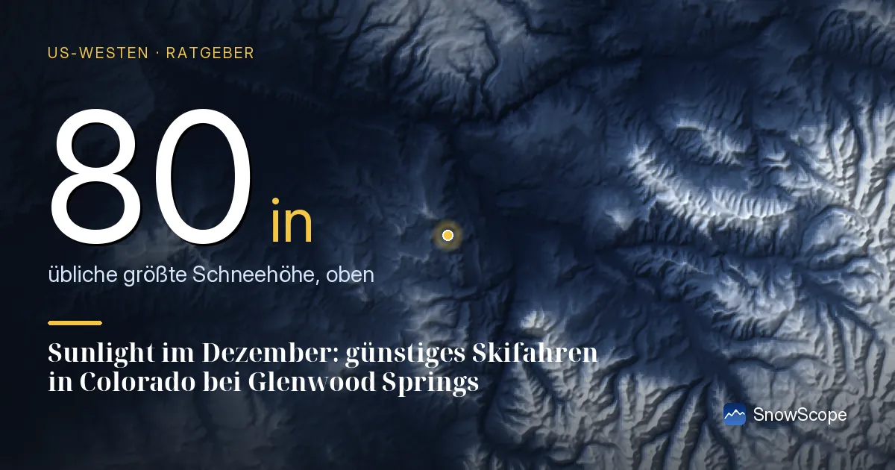

Sunlight im Dezember: günstiges Skifahren in Colorado bei Glenwood Springs
Sunlight ist das Colorado-Skigebiet, das man vergisst, während man sich auf der I-70 anstellt. Es liegt oberhalb von Glenwood Springs, seine Tickets starten bei 74 $, und es ist Teil des Indy Pass. Der Dezemberschnee ist hier laut unserer Historie anständig, aber keine Garantie.
Die Live-Schneeprognose für Sunlight Mountain Resort in der SnowScope-AppSchneehöhen, Pulverschnee-Alarme und 3D-Karte, gratis.
Fernab vom Trubel
Auf unserer Karte ist Sunlight klein: 3 Lifte und rund 23 mi (37 km) Pisten, von etwa 8.140 ft (2.480 m) bis 9.850 ft (3.002 m). Glenwood Springs mit seinen heißen Quellen ist die Stadt unten, was einen Skitag hier zu einer leichten Kombination mit einem Abendbad macht.

Die Preise, und eine Frist
Einzel- und Mehrtagestickets starten bei 74 $. Das bessere Angebot ist der Sunny 6 Pack: sechs Liftkarten ab 349 $, aber das Angebot endet am 30. November 2026, man muss also vor dem eigentlichen Saisonstart kaufen.
Sunlight steht auch auf der Indy-Pass-Liste. Der Indy Base Pass kostet 419 $ und der Indy+ Pass 469 $, jeweils mit zwei Tagen in jedem Mitgliedsgebiet.

Dezember, Woche für Woche
Dauerhafter Schnee erreicht die Bergmitte, etwa 8.990 ft (2.741 m), meist Mitte Oktober. Ein typischer 1. Dezember hat dort 20 in (51 cm), der 15. Dezember 26 in (67 cm), und der Weihnachtstag 31 in (80 cm).
Der Anteil guter Schneewochen auf der Bergmitte (ein Wochenmittel von 20 in, 50 cm, oder mehr) liegt bei 57 % in der ersten Dezemberwoche, 61 % in der zweiten, 78 % in der dritten und 87 % in der Weihnachtswoche. Am 15. Dezember hatten 72 % der Winter 20 in oder mehr auf der Bergmitte. Ein magerer Dezember ließ 13 in (34 cm) übrig: genug für ein paar präparierte Pisten, nicht für die Baumschneisen.
Sunlight gegen Ski Cooper, Wolf Creek und Vail
Ski Cooper hat fast den gleichen Schnee auf der Bergmitte, 26 in (66 cm) an einem typischen 15. Dezember, und einen Wochentagspreis von 49 $ (99 $ am Wochenende und an Feiertagen). Wolf Creek hat mehr Schnee, 34 in (87 cm), für 96 $ an normalen Tagen und 110 $ an Spitzentagen. Vail hatte laut unseren Zahlen 24 in (62 cm) auf der Bergmitte an einem typischen 15. Dezember; die Preise haben wir dort nicht verglichen.
Sunlights Vorteil ist der 6 Pack für alle, die früh entscheiden, und die kurze Warteschlange.
Die ehrliche Ecke
Die Frühsaison ist hier etwas abgerutscht: 29 in (74 cm) auf der Bergmitte an einem typischen 15. Dezember in den ersten 15 Wintern unserer Aufzeichnung, 25 in (63 cm) in den letzten 15, und der Anteil über 20 in fiel von 80 % auf 60 %. Der letzte Winter brachte an diesem Datum 14 in (35 cm). Für einen Dezembertrip zielen Sie auf die Woche vor Weihnachten.
Tipps für Skifahrer
- Entscheiden Sie bis zum 30. November, ob Sie den 6 Pack wollen.
- Zielen Sie auf den 14. bis 24. Dezember, vor den Feiertagen und nach dem Risiko von Anfang Dezember.
- Die Straße von Glenwood Springs hinauf ist eng und kurvig: Winterreifen empfohlen.
- Kombinieren Sie das Skifahren mit den heißen Quellen am selben Tag: Es ist nur eine kurze Fahrt.
Quellen und Nachweise
- Sunlight Mountain Resort, lift tickets (official) sunlightmtn.com/lift-tickets/
- Indy Pass, shop 2026-27 (official) www.indyskipass.com/shop
- Ski Cooper, day pass 2026-27 (official) www.skicooper.com/cooper-day-pass/
- Wolf Creek Ski Area, tickets and passes 2026-2027 (official) wolfcreekski.com/tickets-passes/
- OpenSkiMap (mapped lifts and runs) openskimap.org/
- avalanche.org, US avalanche centers and forecasts avalanche.org/
Zu diesen Zahlen
Schneewerte: SnowScope-Schneehistorie, 46 vergangene Winter (1980-81 bis 2025-26) auf den angegebenen Höhen (Tal, Mitte, Gipfel), eine höhenkorrigierte Rekonstruktion des früheren Schnees für eine Fläche (auf Basis von ERA5-Land; Snow_Hydro 1 km für Marokko), keine Meldungen des Skigebiets. Aktueller Schnee: die SnowScope-Schneekarte. Lifte, Pisten und Höhen: OpenSkiMap-Kartierung. Preise: die unten genannten offiziellen Seiten, gelesen am 13. November 2026; dynamische Preise ändern sich mit Datum und Nachfrage.
Offizielle Lawinenlageberichte: Colorado Avalanche Information Center
Diesen Bericht zitieren
Für Forschung, Lehre oder Presse: Zahlen und Grafiken sind unter CC BY 4.0 mit dieser Quellenangabe frei nutzbar.
SnowScope (2026), Sunlight im Dezember: günstiges Skifahren in Colorado bei Glenwood Springs, https://snowscope.app/blog/de/2026/11/sunlight-mountain-glenwood-springs-december-value.html, abgerufen am 2026-11-15
SnowScope (Atlas Labs). (2026, November 15). Sunlight im Dezember: günstiges Skifahren in Colorado bei Glenwood Springs. SnowScope snow reports. https://snowscope.app/blog/de/2026/11/sunlight-mountain-glenwood-springs-december-value.html
BibTeX
@misc{snowscope2026sunlightmountainglenwood,
author = {{SnowScope (Atlas Labs)}},
title = {Sunlight im Dezember: günstiges Skifahren in Colorado bei Glenwood Springs},
year = {2026},
month = nov,
howpublished = {\url{https://snowscope.app/blog/de/2026/11/sunlight-mountain-glenwood-springs-december-value.html}},
note = {Published 2026-11-15 09:34 UTC; accessed 2026-11-15}
}· CC BY 4.0 · Methoden, Daten und Werkzeuge →
Sunlight Mountain Resort: Schnee und Temperatur nach Höhe, dieser Winter vs letzter (Werkzeuge) →
Sunlight Mountain Resort folgen
Gratis: eine Nachricht, wenn Neuschnee kommt, und jeden Morgen die Vorhersage.